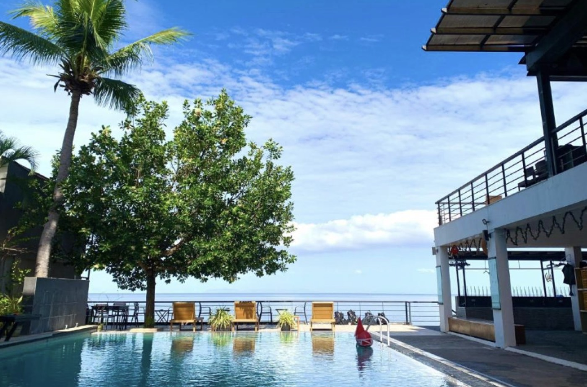
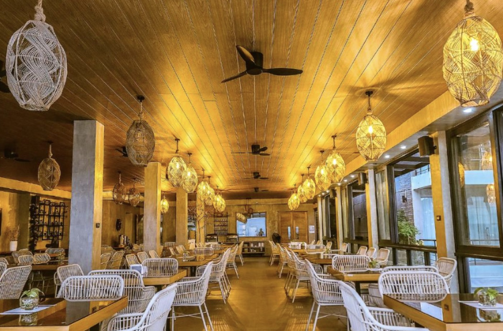
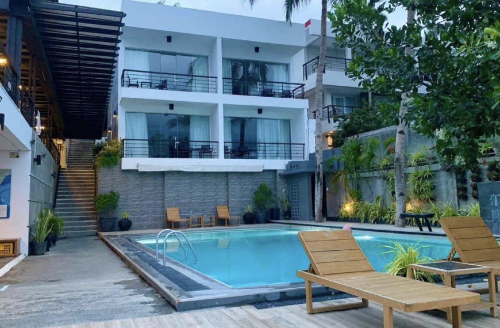
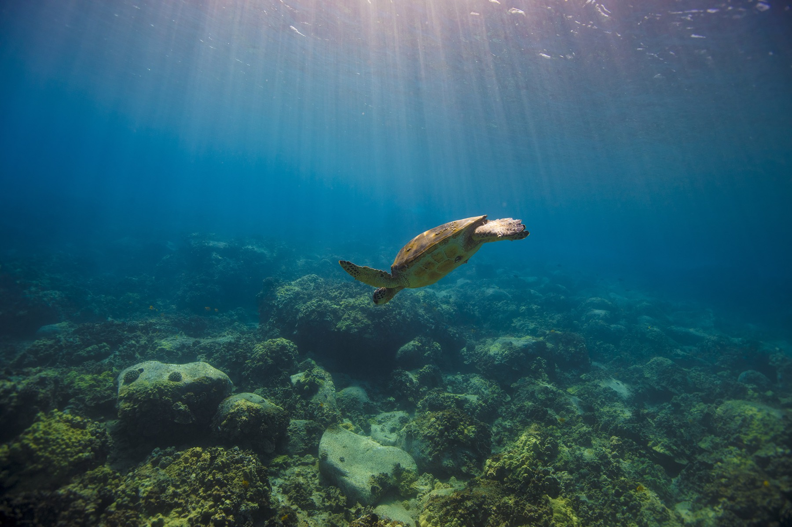
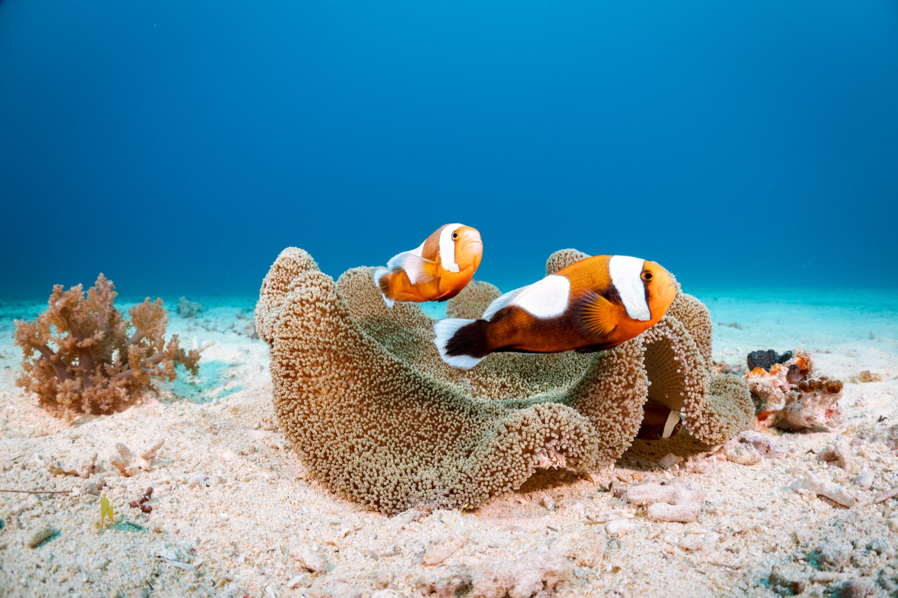
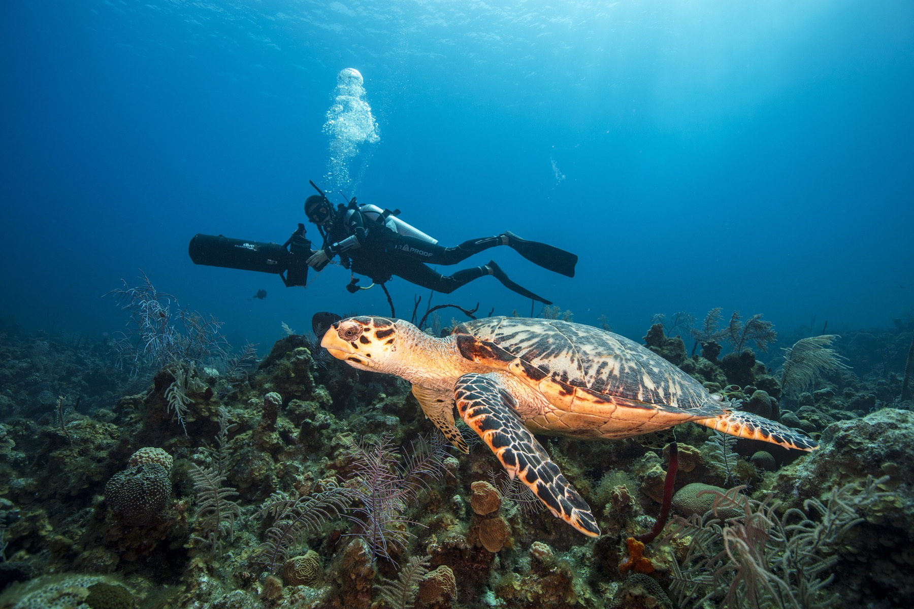
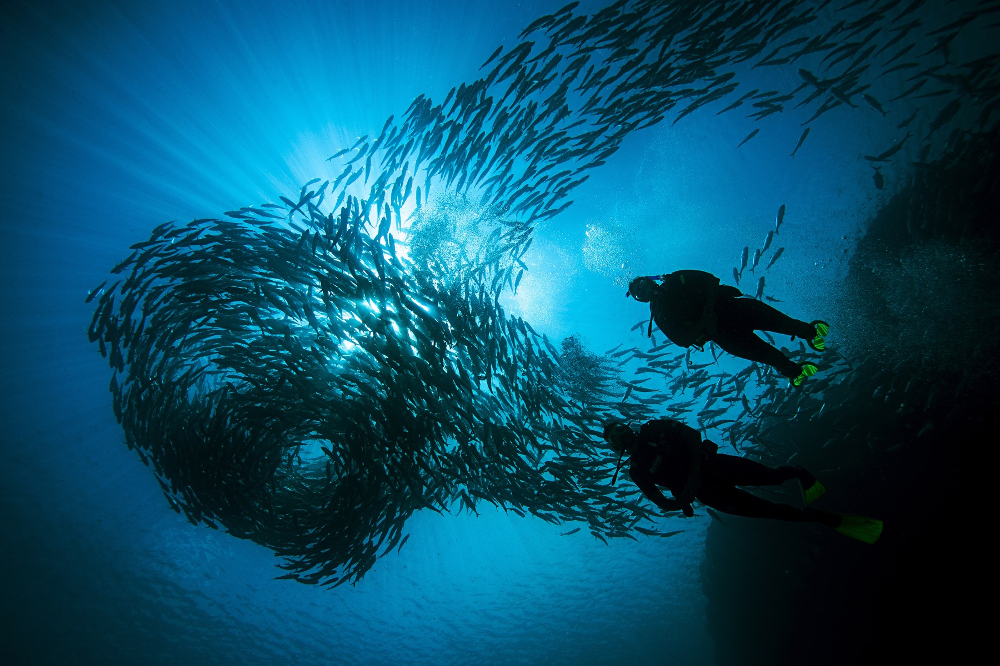
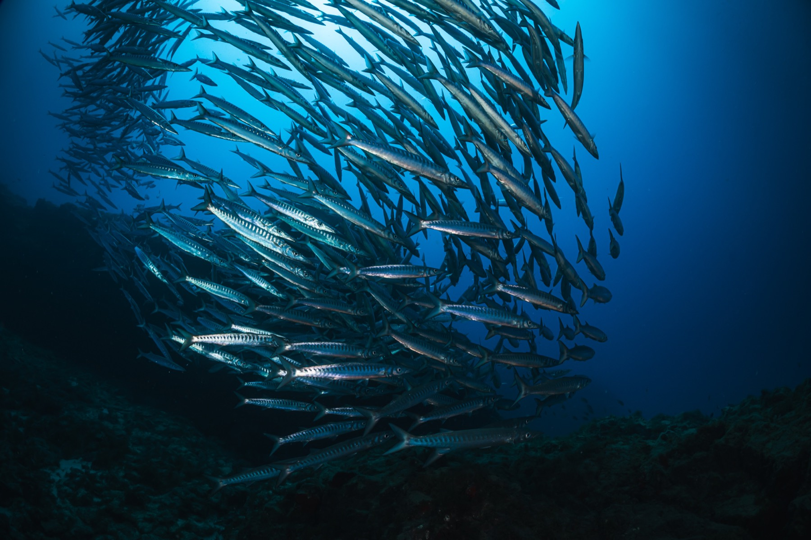
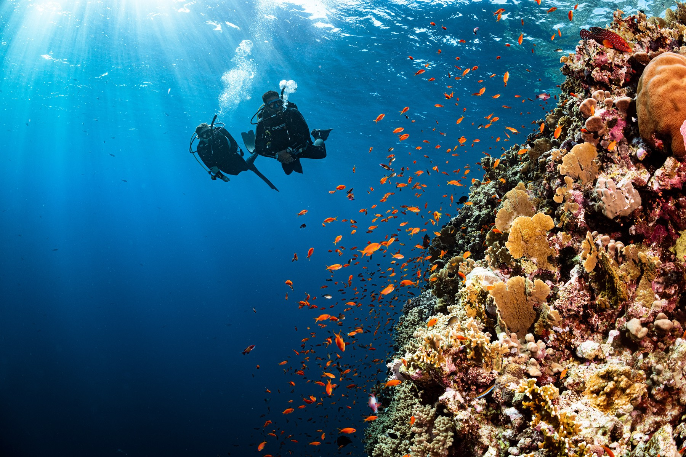
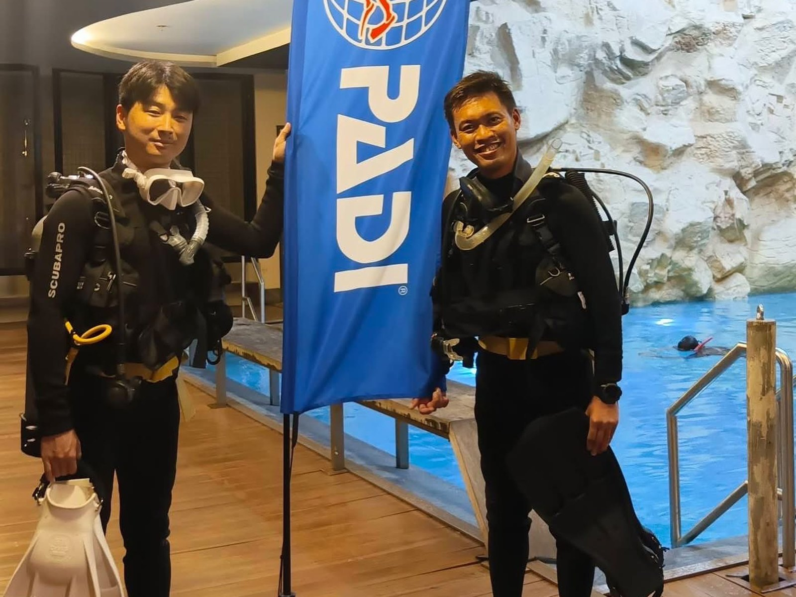

はじめての人へ
オープンウォーター・ダイバー
はじめて潜る人が取る、世界共通のライセンス
₱30,000お一人あたり・講習料
WHY GET CERTIFIED
なぜ、
ライセンスが必要なのか？
「ライセンスがなくても潜れるのでは？」と思うかもしれません。 しかし、体験ダイビングとライセンス取得では、潜れる深さや自由度がまったく違います。
ライセンスなし
体験ダイビング
インストラクターに引率されて潜る
-
自由度
常に体を掴まれながら移動する制限されたダイブ
-
深さ
最大10mまで（浅瀬が中心）
-
景色
浅瀬の砂地や小魚
-
行ける場所
初心者用の浅場のみ
-
資格
その場限り（次回も同じ説明から）
世界中で一生有効
ライセンス取得（PADI）
オープンウォーター
バディと一緒に自由に潜れる
-
自由度
誰にも掴まれず、自由に泳げる
-
深さ
水深18mまで（アドバンスなら30m）
-
景色
ウミガメや巨大魚、浅瀬にはいない数千匹の魚群、沈船
-
行ける場所
世界中の海
-
資格
世界180カ国以上で一生使える（更新不要）
ライセンスがあれば、世界中の海を自由に潜れるようになります。
今週末の2日間で、手ぶらで取得できます。
BRING NOTHING
手ぶらで来て、
ダイバーになって帰る。
持ってくるものは、ひとつもありません。
準備・手配は、ぜんぶおまかせ
- 器材一式（現地レンタル手配）
- タンクとウェイト（現地手配）
- ボートと燃料（手配・同乗）
- マニラ⇄アニラオの送迎サポート
- 宿の予約代行
- タオル（リゾート備え付け）
重い器材の購入や持参は一切不要です。器材やボート、宿泊は現地実費のみ（手配料・仲介料ゼロ）でご利用いただけます。
あなたが持ってくるもの
水着
以上です。
OPEN WATER · MODEL SCHEDULE
土曜の朝に出て、
日曜の夜にはダイバー。
事前学習は、マニラからスマホで完結。土日で完結するため、有給は1日もいりません。
DAY 1 — 土曜
- 5:00頃マニラを出発
- 7:00頃リゾートに到着・朝食
- 9:00頃プールで基礎練習
- 12:00頃昼食（リゾートランチ）
- 13:30頃海へ。1本目
- 15:30頃ログ付け・自由時間
- 18:30頃夕食（海辺でディナー）
DAY 2 — 日曜
- 7:00頃朝食
- 8:00頃ボートで沖へ
- 8:30〜14:00海で3本（合間に昼食）
- 15:30頃ログ付け・認定手続き
- 17:00頃リゾート出発
- 19:00頃マニラに到着
PADI OPEN WATER DIVER
週末の2日間で、
一生モノのライセンスを。
はじめての人が取るのが、オープンウォーター・ダイバーです。一度取れば、世界中で一生使えます。
- LEVEL 1 オープンウォーター 18mまで。ここから始まります
- LEVEL 2 アドバンス 30mまで。夜の海にも
- LEVEL 3 レスキュー 仲間を救えるダイバーに
- LEVEL MAX ダイブマスター プロとして働ける
WHERE YOU STAY
宿泊は、海が目の前のリゾートで。
※よく利用するダイビングリゾートの一例です



ANILAO, BATANGAS
世界中のダイバーが憧れる海へ、
マニラから車で2時間。






マニラから車で2時間のアニラオは、実は世界中のダイバーが憧れる世界的なダイビングスポット。
あなたの最初の一本が、その海です。
10km四方に1,736種 ／ 1966年、フィリピン初のダイブセンター ／ ウミウシ600種
YOUR INSTRUCTOR
教えるのは、
日本人のPADIインストラクター。

教わるのも、質問するのも日本語です。「耳が抜けない」も「怖い」も、そのまま。
安全の確認から、器材の点検まで。ぜんぶ、こちらでやります。
SAFETY FIRST
迷ったら、
その日は潜りません。
雨だから中止、ではありません。雨でも海が穏やかなら潜ります。ただ、波が高ければ中止します。
ダイビングは、判断を誤れば命に関わる遊びです。だから、少しでも危ないと感じた日は海に入らないと決めています。楽しみにして来ていただいた日でも、です。
- 中止になったとき
- 講習費は全額お返しします。宿泊費は、リゾートへのお支払いが発生するためお返しできません。
- お客様のご都合でキャンセルされるとき
- すでにお支払いが発生したものだけ、ご負担いただきます。宿泊費と、PADI eラーニングの教材費（コード発行後）です。それ以外は、当日のキャンセルでも全額お返しします。日程の変更も、同じ扱いです。
YOUR NEXT WORLD IS ONE BREATH AWAY